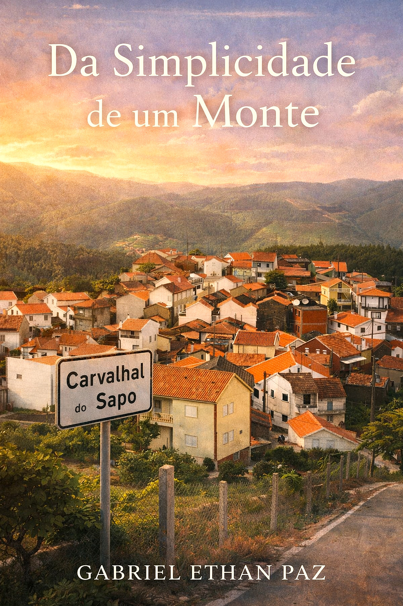
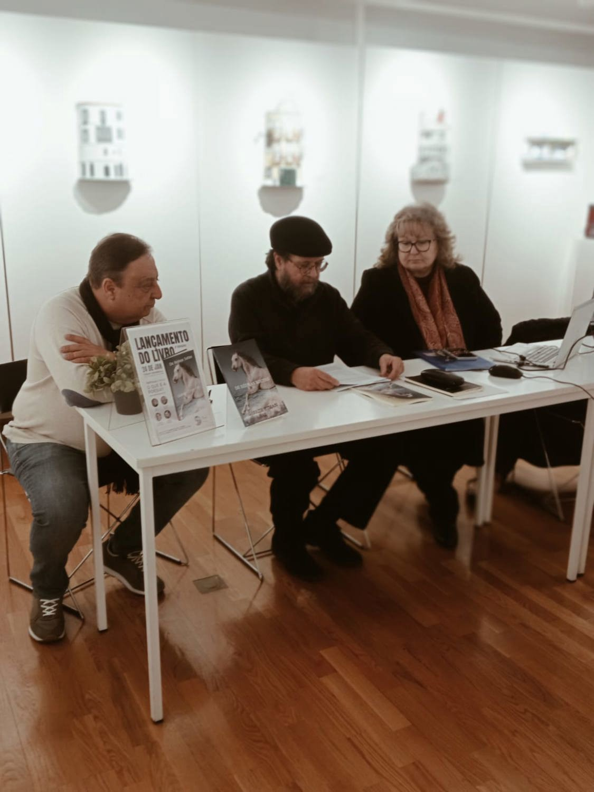
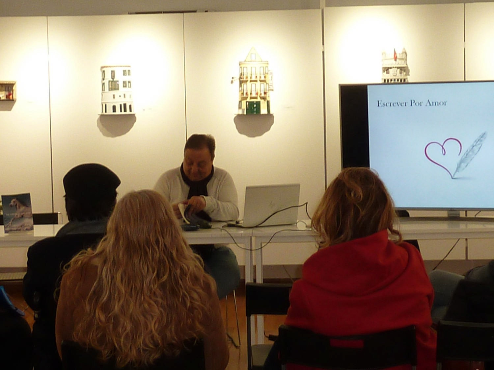
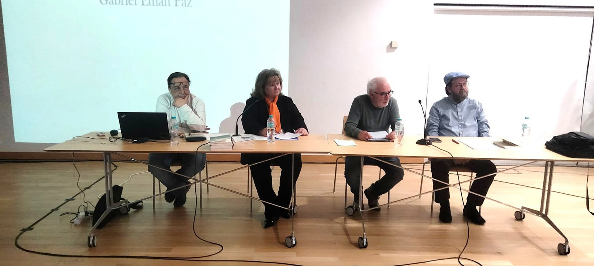
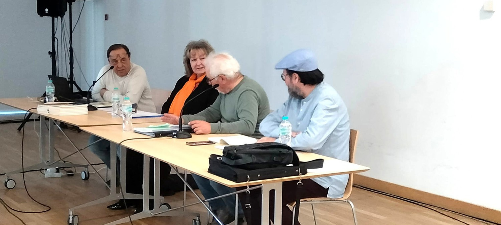

Media Kit Oficial
Material institucional completo para imprensa, eventos, entrevistas e divulgação.
Retrato Oficial

Biografia Curta
Gabriel Ethan Paz é um escritor português nascido em Almada, com carreira internacional na Indústria Farmacêutica antes de se dedicar inteiramente à escrita. Licenciado em Gestão de Marketing e pós‑graduado em Marketing Estratégico, encontrou na literatura o espaço onde a emoção, a introspeção e a liberdade criativa se cruzam. Apaixonado pela natureza, pelos animais, pelo mar e pela música — especialmente o piano —, viajou por mais de 67 países, experiências que moldaram a sua visão sensível e humana do mundo.
Biografia Longa
Gabriel Ethan Paz é o pseudónimo de um cidadão português, nascido na cidade de Almada, que fez carreira profissional na Indústria Farmacêutica. Desempenhou várias funções de marketing e vendas na gestão de medicamentos de notoriedade em Portugal, tendo sido também responsável pela Direção Comercial antes de iniciar uma carreira internacional, onde assumiu o cargo de Diretor Geral numa empresa sediada no Caribe.
Licenciado em Gestão de Marketing pelo IPAM e pós‑graduado em Marketing Estratégico em Bruxelas, decidiu, numa fase mais madura da sua vida, não prosseguir com o MBA por cansaço académico e falta de motivação. Preferiu dedicar-se à escrita, explorando diferentes géneros literários, e recuperar hobbies que durante anos ficaram suspensos, como a leitura e a música.
Entusiasta fervoroso da inteligência emocional, escreve com autenticidade desarmante, sem receio de expor sentimentos e vulnerabilidades. Apaixonado por animais, pela natureza e pela praia, encontra no mar a sua principal fonte de serenidade e inspiração. A música é presença constante na sua vida, sendo o piano o instrumento de eleição.
Viajante pelos quatro continentes, percorreu mais de 67 países e 128 cidades, experiências que lhe ampliaram o olhar sobre o mundo e o tornaram mais benevolente, sensível e atento à condição humana.
E a sua viagem — geográfica, emocional e literária — continua em expansão.
Missão Literária
A minha missão nasce do instante em que a alma se desgoverna e me deixa à mercê de emoções que me assaltam, me ferem ou me salvam. Há momentos em que tudo pára — o mundo, o corpo, o tempo — e apenas as minhas mãos continuam, entregues a um impulso que não controlo. É aí que as rédeas se soltam e eu me encontro.
Escrevo porque não sei calar o que me atravessa. Porque as palavras, quando irrompem, são mais verdadeiras do que qualquer gesto. Elas deliram no papel, procuram sentido, procuram‑me a mim. São o meu modo de respirar quando o peito aperta, o meu modo de existir quando a vida pesa, o meu modo de amar quando o silêncio já não basta.
Escrevo porque sim. Escrevo porque preciso. Escrevo porque, quando me abandono às palavras, reencontro a liberdade que tantas vezes me falta. Escrevo por amor — ao que sinto, ao que sou, ao que ainda procuro.
Livros Publicados

De Rédeas Soltas
Um romance sobre a coragem de abandonar o que nos prende e de regressar ao que realmente somos. A história acompanha um homem que, depois de uma perda que o desarma, decide enfrentar a própria vida sem filtros, sem máscaras e sem desculpas. Entre memórias, encontros e revelações, descobre que a liberdade não é um destino, mas um ato íntimo de entrega — e que só quando soltamos as rédeas é que começamos verdadeiramente a viver.

Impedidos de Amar
Dois mundos que nunca deveriam ter-se cruzado encontram-se num amor tão improvável quanto inevitável. Entre diferenças sociais, expectativas familiares e feridas antigas, nasce uma ligação que desafia tudo o que é permitido. É a história de duas almas que se reconhecem no instante em que se tocam — mas que precisam de enfrentar o peso do passado e o julgamento do mundo para descobrirem se o amor pode sobreviver ao que o impede.

Da Simplicidade de um Monte
Um homem e uma mulher nascem na mesma aldeia, separados apenas por um monte que parece guardar todos os segredos da terra. Crescem entre silêncios, tradições e uma vida simples que esconde profundidades que ninguém ousa nomear. Quando o destino os volta a aproximar, percebem que o que os une não é apenas a origem, mas a forma como ambos aprenderam a olhar o mundo: com humildade, com verdade e com a consciência de que a simplicidade é, muitas vezes, o lugar onde a alma encontra repouso.

O Roubo Perdoável
Um romance sobre a mortalidade, a memória e o que deixamos nos outros quando já não estamos. A história acompanha um homem que, confrontado com a fragilidade da vida, decide roubar ao tempo aquilo que ainda não viveu. Mas esse roubo — íntimo, silencioso, quase sagrado — acaba por revelar que há perdas que nos transformam e amores que permanecem mesmo quando tudo o resto desaparece. Um livro sobre o perdão, a despedida e a beleza do que é finito.
Fotografias Oficiais




Press Highlights
- Eventos literários e apresentações públicas
- Entrevistas e conversas
- Artigos e menções em imprensa
- Participações futuras
- Citações selecionadas
Contactos Oficiais
Email: gabriel.ethan.paz@protonmail.com
Instagram: @escritorgabrielethanpaz
Website: gabrielethanpaz.com
Substack: gabrielethanpaz.substack.com